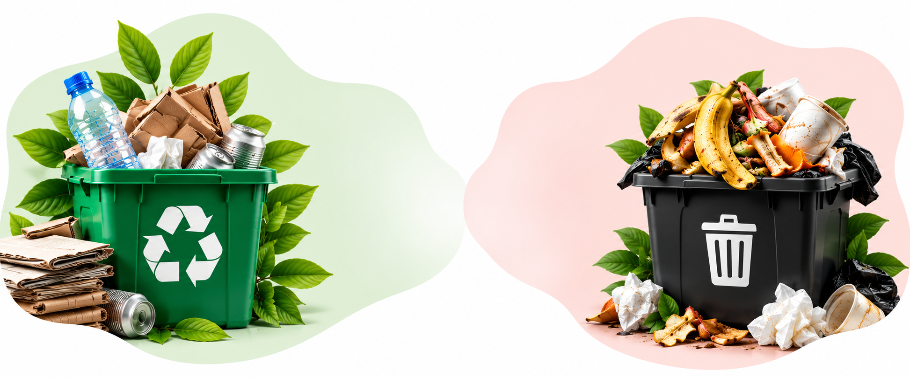
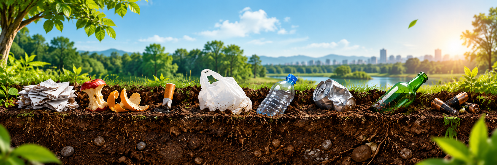

RESÍDUO
Ainda pode gerar valor e ter um novo destino.
- Pode ser reciclado
- Pode ser reutilizado
- Pode ser reaproveitado
- Volta para a cadeia produtiva
Reciclar é transformar materiais que seriam descartados em novos recursos, evitando o desperdício e contribuindo para a preservação do meio ambiente. Conheça os materiais que podem ser reciclados e como cada um deles faz a diferença para a nossa cidade.
Separe corretamente os materiais e contribua para um ambiente mais limpo e uma cidade mais sustentável.

Jornais, revistas, caixas, folhas, cadernos e embalagens de papel limpas e secas.

Garrafas, potes, frascos, embalagens, tubos, sacolas e outros plásticos.

Garrafas, potes, frascos e outros recipientes de vidro, sem resíduos.

Latas de alumínio e aço, tampas, panelas e outros materiais metálicos.

Restos de alimentos, cascas de frutas, borra de café, folhas e podas.

Celulares, pilhas, baterias, cabos, carregadores e equipamentos sem uso.

Separar corretamente ajuda a destinar cada material da forma certa e aumenta as chances de reciclagem, reduzindo o impacto no meio ambiente.
Ainda pode gerar valor e ter um novo destino.
Não pode mais ser aproveitado por reciclagem.
O tempo varia conforme o material e as condições do ambiente. Veja como alguns resíduos podem permanecer na natureza.

Seguir algumas dicas facilita o trabalho das cooperativas e garante que os materiais sejam realmente reciclados.
Evite odores e contaminações.
Retire resíduos e deixe secar.
Facilita a triagem nas cooperativas.
Use os locais adequados para cada material.
Encontre os pontos de coleta mais próximos de você no Mapa da Coleta.